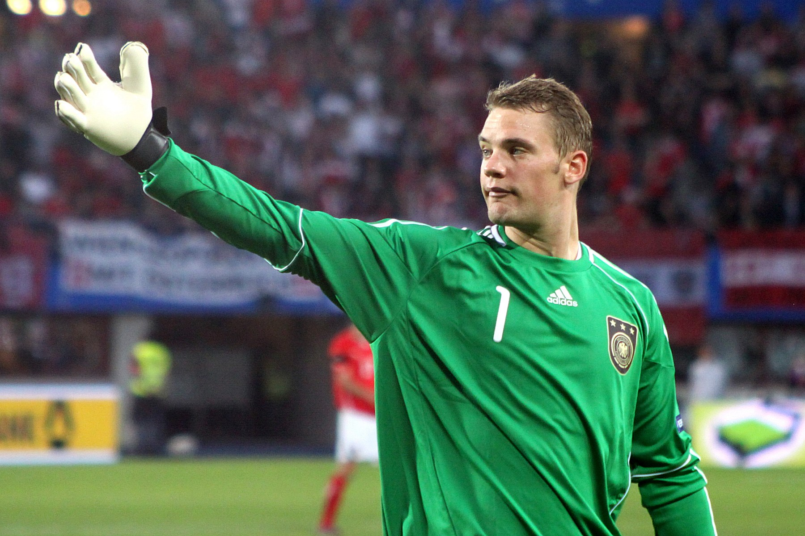

Manuel Neuer não inventou o goleiro que joga com os pés, abandona a área e participa da construção ofensiva. Outros nomes já haviam utilizado essas características em diferentes períodos do futebol. Poucos, porém, conseguiram reunir todos esses elementos com tamanha frequência, eficiência e influência sobre uma geração.
Seguro nas defesas, forte nos confrontos individuais e tecnicamente confortável longe da meta, Neuer ajudou a redefinir o que se espera de um goleiro em equipes que pressionam o adversário e defendem com a linha alta. Sua capacidade de antecipar lançamentos permitia que os defensores avançassem no campo, enquanto sua qualidade com a bola oferecia uma opção adicional para iniciar as jogadas.
Aos 40 anos, o alemão segue em atividade no Bayern de Munique e possui contrato válido até junho de 2027. Mesmo assim, a dimensão histórica de sua trajetória já está consolidada por títulos, recordes, atuações decisivas e uma influência que pode ser observada na formação de goleiros em todo o mundo.
O início da trajetória
Ele nasceu em 27 de março de 1986, em Gelsenkirchen, cidade localizada no oeste da Alemanha. Sua relação com o Schalke 04 começou ainda na infância. Ele entrou nas categorias de base do clube em 1991 e percorreu diferentes etapas da formação até chegar à equipe profissional.
A estreia aconteceu em 2006. Neuer rapidamente ganhou espaço e demonstrou uma personalidade incomum para um goleiro tão jovem. Não se limitava a permanecer próximo da linha do gol: saía da área, participava da circulação da bola e assumia riscos que, posteriormente, se transformariam em marcas de seu estilo.
Uma das primeiras grandes atuações internacionais aconteceu em março de 2008, contra o Porto, pelas oitavas de final da Liga dos Campeões. Depois da vitória do Schalke por 1 a 0 na Alemanha, os portugueses devolveram o placar no Estádio do Dragão e levaram a eliminatória para a prorrogação.
Neuer realizou uma sequência de defesas durante a partida e impediu que o Porto ampliasse a vantagem. Na disputa por pênaltis, defendeu as cobranças de Bruno Alves e Lisandro López. O Schalke venceu por 4 a 1 e avançou pela primeira vez às quartas de final da Champions. A atuação apresentou o jovem goleiro ao cenário europeu e mostrou sua capacidade de crescer em partidas decisivas.
O título mais importante de Neuer pelo Schalke veio na temporada 2010/11. O clube conquistou a Copa da Alemanha com uma goleada por 5 a 0 sobre o Duisburg na final. Na mesma campanha, chegou à semifinal da Liga dos Campeões, sendo eliminado pelo Manchester United.
Aquela foi a despedida ideal de um jogador criado no clube. Neuer deixou o Schalke em 2011 como capitão, campeão nacional e um dos goleiros mais valorizados do futebol europeu.
A chegada ao gigante e o começo com frustração
O Bayern de Munique contratou Neuer em 2011 para transformá-lo no sucessor de uma tradição que já havia contado com nomes como Sepp Maier e Oliver Kahn. A transferência, no entanto, não foi recebida de forma totalmente tranquila.
Parte da torcida do Bayern resistia à chegada de um jogador identificado com o Schalke, rival tradicional no futebol alemão. Neuer precisou conquistar confiança dentro de campo e demonstrar que poderia representar o clube em longo prazo.
A primeira temporada terminou de maneira dolorosa. O Bayern ficou com o vice-campeonato da Bundesliga, perdeu a final da Copa da Alemanha para o Borussia Dortmund e foi derrotado pelo Chelsea na decisão da Liga dos Campeões, disputada em sua própria casa, a Allianz Arena.
Na final europeia de 2012, Neuer ainda defendeu a cobrança de Juan Mata na disputa por pênaltis e converteu sua própria tentativa. O esforço não foi suficiente: o Chelsea venceu a série e deixou o Bayern diante de uma das derrotas mais frustrantes de sua história recente.
O primeiro triplete em 2013
A resposta aconteceu na temporada seguinte. O Bayern conquistou a Bundesliga, a Copa da Alemanha e a Liga dos Campeões, completando o primeiro triplete de sua história.
Na decisão europeia de 2013, em Wembley, o clube derrotou o Borussia Dortmund por 2 a 1, com gols de Mario Mandžukić e Arjen Robben. Neuer teve papel importante ao segurar a pressão inicial do rival, que criou oportunidades e começou a partida em ritmo intenso.
O título europeu confirmou a ascensão do goleiro e abriu uma era de domínio do Bayern no futebol alemão. A equipe passou a acumular conquistas nacionais, enquanto Neuer se consolidou como titular, liderança do elenco e referência técnica.
Desde sua chegada a Munique, o alemão conquistou todos os títulos possíveis. Neuer também se tornou capitão do Bayern em 2017 e superou a marca de 500 partidas oficiais pelo clube.
O auge com a Seleção
Neuer estreou pela seleção principal da Alemanha em 2009. No mesmo ano, foi campeão europeu sub-21 e começou a ganhar espaço na disputa pela posição no time principal.
A oportunidade de assumir definitivamente a camisa 1 surgiu antes da Copa do Mundo de 2010. René Adler, então favorito para ser o titular, sofreu uma lesão e ficou fora da competição. Neuer aproveitou a chance, participou da campanha que terminou com a Alemanha na terceira colocação e não deixou mais a posição.
Quatro anos depois, chegou ao Brasil como um dos líderes de uma seleção preparada para disputar o título. A Alemanha passou pela primeira fase, eliminou Argélia, França e Brasil e derrotou a Argentina por 1 a 0 na final, no Maracanã, com gol de Mario Götze na prorrogação, se tornando tetra campeã Mundial.
Neuer foi eleito o melhor goleiro da Copa e recebeu a Luva de Ouro. Sua participação, entretanto, ultrapassou as defesas tradicionais. A partida contra a Argélia, nas oitavas de final, tornou-se uma das grandes referências de sua carreira.
Com a defesa alemã posicionada longe da área, os argelinos tentavam explorar lançamentos nas costas dos zagueiros. Neuer saiu repetidamente do gol para cortar os passes, realizou desarmes, cabeceou bolas e atuou quase como um líbero. A Alemanha venceu por 2 a 1 na prorrogação, e o desempenho do goleiro tornou-se uma espécie de demonstração prática sobre o futuro da posição.
A nova posição
A expressão goleiro-líbero é utilizada para definir o jogador que, além de proteger a meta, atua como cobertura dos defensores e participa ativamente da construção. Neuer tornou esse papel mais visível e mais extremo em equipes de alto nível.
Seu posicionamento permitia que Bayern e Alemanha pressionassem o adversário no campo de ataque. Caso um lançamento superasse os zagueiros, Neuer deixava a área para interceptá-lo. Era necessário combinar velocidade, leitura de jogo, coragem e precisão no tempo de saída.
A participação com os pés também ajudava a superar a primeira linha de pressão. Neuer podia realizar passes curtos, inverter o jogo ou encontrar companheiros no meio-campo. Quando pressionado, demonstrava tranquilidade para controlar a bola e escolher uma solução.
A influência do alemão não significa que todos os goleiros passaram a copiar seus movimentos. O principal impacto foi ampliar a percepção sobre a posição. Defender continuou sendo a responsabilidade central, mas a capacidade de participar do jogo passou a ter peso maior nas avaliações e nos treinamentos.
A influência de Neuer sobre a evolução da posição também se conecta à trajetória de outros goleiros que ultrapassaram as funções tradicionais. Enquanto o alemão se tornou referência pela atuação como líbero, pelas antecipações fora da área e pela participação na construção, a carreira de Rogério Ceni ganhou dimensão histórica pelos 131 gols marcados em cobranças de falta e pênaltis. Com estilos distintos, os dois ajudaram a mostrar que o goleiro pode influenciar uma partida muito além das defesas.
Essa expansão das funções também aparece em outras modalidades. A trajetória do goleiro Tiago Marinho no futsal mostra como um jogador da posição pode participar da construção ofensiva, executar lançamentos, comandar a equipe e transformar a defesa no ponto inicial do ataque.
O segundo triplete
Neuer voltou a conquistar a Liga dos Campeões na temporada 2019/20. Sob o comando de Hansi Flick, o Bayern apresentou um futebol intenso, agressivo e dominante.
A equipe venceu todos os jogos de sua campanha europeia e aplicou uma histórica goleada por 8 a 2 sobre o Barcelona nas quartas de final. Na decisão, em Lisboa, derrotou o Paris Saint-Germain por 1 a 0, com gol de Kingsley Coman.
Neuer foi decisivo na final. O PSG criou oportunidades com Neymar e Kylian Mbappé, mas encontrou o goleiro alemão em alto nível. Sua presença nos confrontos individuais e a capacidade de fechar os espaços ajudaram o Bayern a terminar a decisão sem sofrer gols.
O título completou o segundo triplete da carreira de Neuer, novamente com Bundesliga, Copa da Alemanha e Liga dos Campeões. Ele se tornou um dos poucos jogadores presentes nas duas conquistas tríplices do Bayern, em 2013 e 2020.
O desempenho também rendeu o prêmio The Best de melhor goleiro da FIFA em 2020. Neuer já havia sido escolhido cinco vezes pela Federação Internacional de História e Estatísticas do Futebol como o melhor goleiro do mundo e foi eleito o jogador do ano na Alemanha em 2011 e 2014.
Lesões e capacidade de reconstrução
A longevidade também foi testada por lesões graves. Entre 2017 e 2018, problemas no pé limitaram sua sequência e colocaram em dúvida sua participação na Copa do Mundo da Rússia.
O período mais delicado, porém, começou no fim de 2022. Depois da eliminação da Alemanha na Copa do Catar, o goleiro sofreu uma fratura na perna direita durante suas férias e precisou passar por um longo processo de recuperação.
Neuer ficou 350 dias sem disputar uma partida oficial. O retorno aconteceu em 28 de outubro de 2023, na vitória do Bayern por 8 a 0 sobre o Darmstadt pela Bundesliga.
Além de recuperar a titularidade, voltou a disputar partidas de alto nível em um momento no qual já se aproximava dos 38 anos.
A recuperação foi importante para prolongar sua carreira e preservar seu espaço no Bayern. Mesmo com o clube preparando Jonas Urbig como uma alternativa para o futuro, Neuer renovou seu contrato até 2027 e permanece como uma referência dentro do grupo de goleiros.
A última Copa do Mundo
Neuer disputou as Copas do Mundo de 2010, 2014, 2018 e 2022. Depois da Eurocopa de 2024, anunciou sua aposentadoria da seleção alemã com 124 partidas disputadas.
O afastamento, porém, não foi definitivo. O goleiro voltou à seleção e foi convocado por Julian Nagelsmann para a Copa do Mundo de 2026, realizada nos Estados Unidos, no Canadá e no México.
A competição marcou sua quinta e última participação em Mundiais. Neuer ampliou os recordes entre os goleiros alemães, mas não conseguiu conduzir a equipe a uma campanha longa. A Alemanha foi eliminada pelo Paraguai na fase de 32 avos de final.
O jogo terminou empatado por 1 a 1 após a prorrogação. Na disputa por pênaltis, o Paraguai venceu por 4 a 3 e avançou às oitavas. Depois da eliminação, Neuer confirmou que aquela havia sido sua última partida pela seleção. Ele encerrou o ciclo internacional com 128 jogos e uma Copa do Mundo conquistada.
Principais números e títulos:
- Mais de 500 partidas oficiais pelo Bayern de Munique
- 128 jogos pela seleção da Alemanha
- Cinco Copas do Mundo disputadas
- Campeão mundial em 2014
- Luva de Ouro da Copa do Mundo de 2014
- Recordista de partidas sem sofrer gols na Liga dos Campeões, com 62 jogos até maio de 2026
Pelo Schalke 04:
- Copa da Alemanha: 2010/11
Pelo Bayern de Munique:
- Liga dos Campeões: 2012/13 e 2019/20
- Mundial de Clubes: 2013 e 2020
- Supercopa da UEFA: 2013 e 2020
- Bundesliga: 13 títulos
- Copa da Alemanha: cinco títulos
- Supercopa da Alemanha: oito títulos
Uma carreira histórica
Manuel Neuer já possui uma trajetória suficiente para ser colocado entre os goleiros mais importantes da história, mas sua carreira nos clubes ainda não terminou. O contrato até 2027 mantém aberta a possibilidade de novos jogos, títulos e recordes pelo Bayern.
Sua contribuição mais profunda talvez não possa ser medida apenas por troféus. Neuer modificou a percepção sobre os espaços que um goleiro pode ocupar e sobre a influência que a posição pode exercer na estratégia de uma equipe.
A segurança nas defesas continuou sendo a base de seu sucesso. O que o tornou diferente foi acrescentar antecipação, coragem, leitura tática e qualidade com os pés sem abandonar a função principal.
Neuer atravessou diferentes gerações do Bayern e da seleção alemã. A Copa de 2026 encerrou sua história internacional, mas a camisa do clube de Munique permanece em atividade.
Enquanto continuar entrando em campo, a carreira ainda poderá ganhar novos capítulos. O lugar de Manuel Neuer na evolução dos goleiros, entretanto, já está definido.